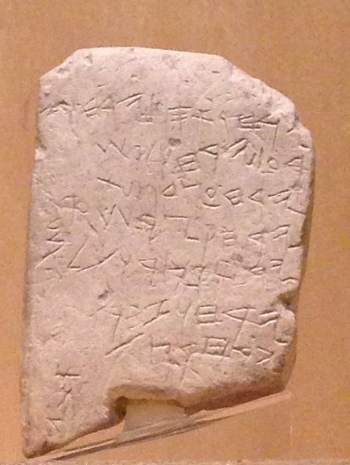

Gezer Calendar

- Find Name
- Gezer Calendar
- Historical Period
- Iron Age II
- Artifact Date
- c. 925 BC
- Date Discovered
- 1908
- Discovery Location
- Gezer (Tell Gezer), Israel
- Current Location
- Istanbul Archaeology Museums, Turkey
- Timeline Era
- United Monarchy
- Description
- A small limestone tablet inscribed with a seven-line Hebrew poem listing the agricultural seasons: two months of gathering, two of sowing, two of late planting, and so on through the year. It is one of the oldest known Hebrew inscriptions and may have been a schoolboy's writing exercise.
- Biblical Significance
- Found at Gezer, the city Pharaoh gave as a dowry to Solomon's wife, the calendar shows everyday Hebrew writing and farming rhythms in the early monarchy period. It quietly confirms that Israel's faith was lived by farmers counting seasons under God's providence, much as Ecclesiastes and the Psalms describe.
- Evidence Class
- Contextual
- Interpretations
- Scholars agree the calendar is a tenth-century agricultural list; debate concerns whether its script is Hebrew or Phoenician and whether it is a school exercise or a farmer’s almanac.
- Scripture Illuminated
- Related People
- Related Books
Awaiting Review Not yet checked against scholarly sources. Treat its claims as provisional until this entry is reviewed. About verification
Last reviewed: not yet reviewed